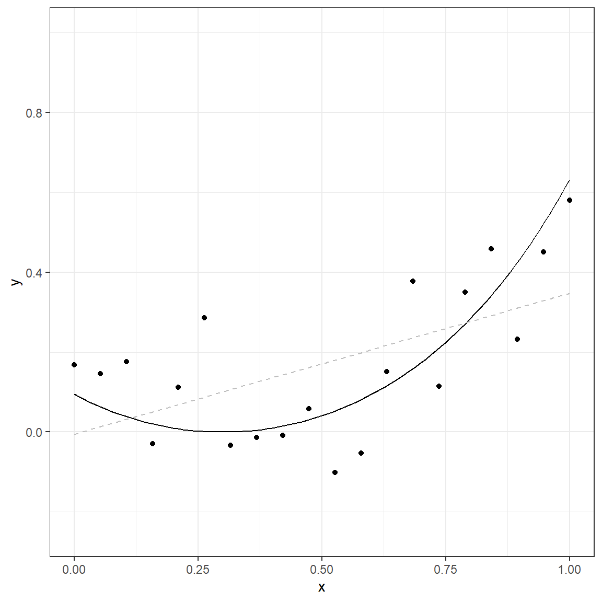
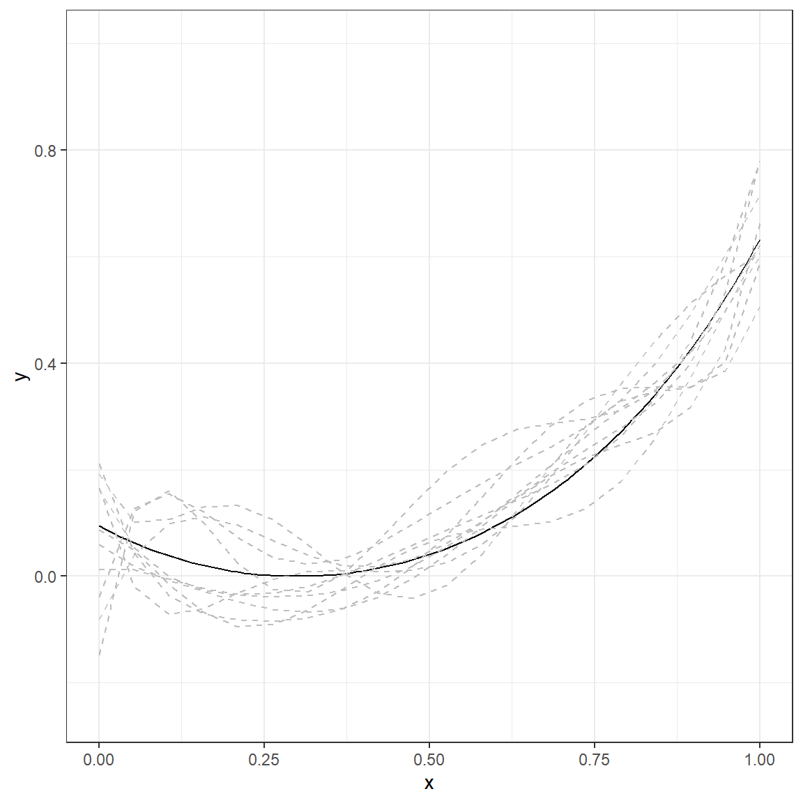
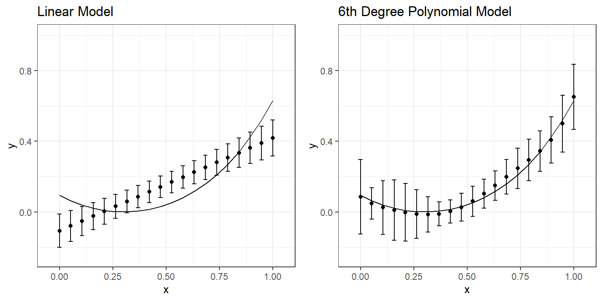
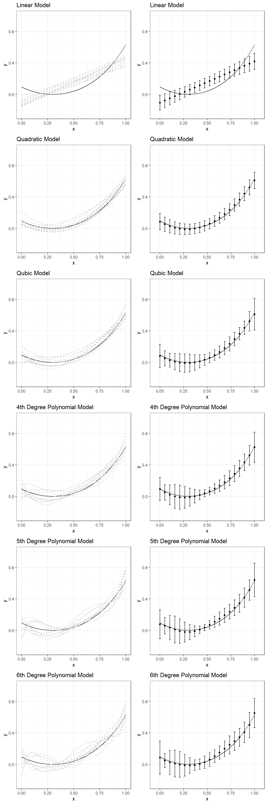
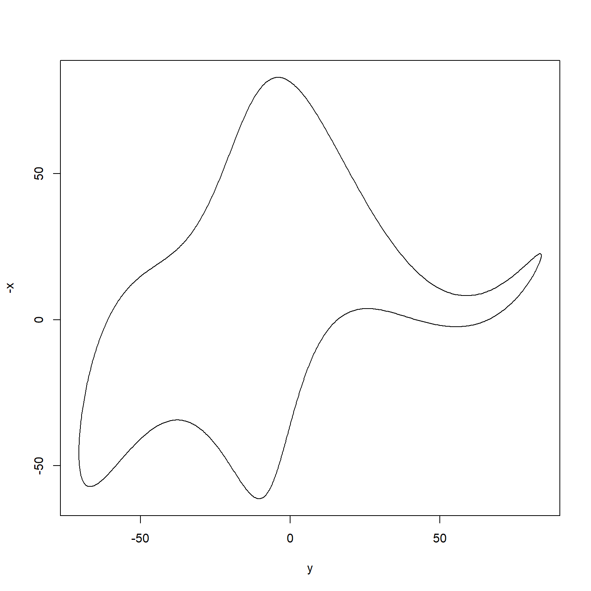

[Updated: Sun, Nov 27, 2022 - 14:05:30 ]
How many parameters does it take to draw an elephant?
Once upon a time, two physicists met, and one convinced the other that the agreement between some model-based calculations and measured experimental numbers was only superficial. In that conversation, von Neumann was quoted as saying this famous phrase “… with four parameters I can fit an elephant, and with five I can make him wiggle his trunk.” You can read the full story here.
Since then, several people have tried to develop mathematical models that can draw an elephant with as few parameters as possible. It has become an exciting activity when people want to make a point about how complex of a model one would need to understand what we observe in the real world.
Now, we will join them. See the following plot that has several data points. Would you say there is an elephant there? Can you develop a mathematical model to fit these data points? How complex would that model be? How many parameters would you need?

Below is a web application with such a model. You can increase the number of parameters in this model from 1 to 70, and the model predictions will start to look like an elephant. Our quick exploration aims to find the number of parameters you would use to model an elephant. Start manipulating the p (number of parameters) and examine how the model predicted contour changes. Stop when you believe you can convince someone else that it looks like an elephant.
https://kourentzes.shinyapps.io/FitElephant/
The Principle of Parsimony
Bias - Variance Tradeoff
When we use a model to predict an outcome, there are two primary sources of error: model error and sampling error.
Model Error: Given that no model is a complete representation of truth underlying observed data, every model is misspecified. Conceptually, we can define the model error as the distance between the model and the true generating mechanism underlying data. Technically, for a given set of predictors, it is the difference between the expected value predicted by the model and the true value underlying data. The term bias is also commonly used for model error.
Sampling Error: Given that the amount of data is fixed during any modeling process, it will decrease the stability of parameter estimates for models with increasing complexity across samples drawn from the same population. Consequently, this will increase the variance of predictions (more variability of a predicted value across different samples) for a given set of the same predictors. The terms estimation error or variance is also used for sampling error.
The essence of any modeling activity is to balance these two sources of error and find a stable model (generalizable across different samples) with the least amount of bias.
Bias and Variance of Model Predictions
We will do a simple Monte Carlo experimentation to understand these two sources of error better. Suppose that there is a true generating model underlying some observed data. This model is
\[ y = e^{(x-0.3)^2} - 1 + \epsilon, \]
where \(x\) is a predictor variable equally spaced and ranges from 0 to 1, \(\epsilon\) is a random error component. The errors follow a normal distribution with a mean of zero and a standard deviation of 0.1, and \(y\) is the outcome variable. Suppose we simulate a small observed data following this model with a sample size of 20. Then, we use a straightforward linear model to represent the observed simulated data.
\[ y = \beta_0 + \beta_1x + \epsilon \]
[1] 0.00000000 0.05263158 0.10526316 0.15789474 0.21052632 0.26315789
[7] 0.31578947 0.36842105 0.42105263 0.47368421 0.52631579 0.57894737
[13] 0.63157895 0.68421053 0.73684211 0.78947368 0.84210526 0.89473684
[19] 0.94736842 1.00000000e <- rnorm(20,0,.1)
e [1] 0.07372726 0.08253427 0.13678980 -0.04993081 0.10368134
[6] 0.28473311 -0.03402811 -0.01834963 -0.02296964 0.02782503
[11] -0.15425785 -0.13371024 0.03465939 0.21786527 -0.09607842
[16] 0.07927619 0.11618340 -0.19217742 -0.07000210 -0.05165884y <- exp((x-0.3)^2) - 1 + e
y [1] 0.167901540 0.145636360 0.175440469 -0.029531625 0.111719007
[6] 0.286091377 -0.033778768 -0.013657214 -0.008208013 0.058450844
[11] -0.101704649 -0.052791207 0.150875614 0.376935001 0.114176511
[16] 0.349997226 0.457803769 0.232167369 0.450568829 0.580657384mod <- lm(y ~ 1 + x)
mod
Call:
lm(formula = y ~ 1 + x)
Coefficients:
(Intercept) x
-0.00542 0.35272 predict(mod) 1 2 3 4 5
-0.005420071 0.013143883 0.031707837 0.050271791 0.068835745
6 7 8 9 10
0.087399698 0.105963652 0.124527606 0.143091560 0.161655514
11 12 13 14 15
0.180219468 0.198783422 0.217347376 0.235911330 0.254475284
16 17 18 19 20
0.273039238 0.291603192 0.310167146 0.328731099 0.347295053 
The solid line in this plot represents the true nature of the relationship between \(x\) and \(y\). The observed data points do not lie on this line due to the random error component (noise). If we use a simple linear model, the gray dashed line represents the predicted relationship between \(x\) and \(y\).
This demonstration only represents a single dataset. Now, suppose that we repeat the same process ten times. We will produce ten different datasets with the same size (N=20) using the same predictor values (\(x\)) and true data generating model. Then, we will fit a simple linear model to each of these ten datasets.
p.1 <- ggplot()+
geom_function(fun = function(x) exp((x-.3)^2)-1)+
theme_bw()+
xlab('x')+
ylab('y')+
xlim(c(0,1))+
ylim(c(-0.25,1))
for(i in 1:10){
p.1 <- p.1 + geom_line(aes_string(x=x,y=predict(M1[[i]])),col='gray',lty=2)
}
p.1
The solid line again represents the true nature of the relationship between \(x\) and \(y\). There are ten lines (gray, dashed), and each line represents a simple linear model fitted to a different dataset simulated using the same data generating mechanism. The table below provides a more detailed look at the fitted values from each replication for every single \(x\) value.
|
Model Predicted Value Across 10 Replications
|
|||||||||||||
|---|---|---|---|---|---|---|---|---|---|---|---|---|---|
| x | y (TRUE) | 1 | 2 | 3 | 4 | 5 | 6 | 7 | 8 | 9 | 10 | Mean | SD |
| 0.000 | 0.094 | -0.005 | -0.144 | -0.112 | -0.154 | -0.065 | -0.093 | -0.114 | -0.133 | -0.140 | -0.080 | -0.107 | 0.047 |
| 0.053 | 0.063 | 0.013 | -0.113 | -0.084 | -0.121 | -0.035 | -0.065 | -0.087 | -0.108 | -0.113 | -0.051 | -0.079 | 0.044 |
| 0.105 | 0.039 | 0.032 | -0.081 | -0.056 | -0.088 | -0.006 | -0.037 | -0.060 | -0.082 | -0.085 | -0.022 | -0.051 | 0.041 |
| 0.158 | 0.020 | 0.050 | -0.049 | -0.028 | -0.056 | 0.023 | -0.008 | -0.033 | -0.056 | -0.058 | 0.007 | -0.024 | 0.039 |
| 0.211 | 0.008 | 0.069 | -0.017 | 0.000 | -0.023 | 0.052 | 0.020 | -0.006 | -0.030 | -0.031 | 0.036 | 0.004 | 0.036 |
| 0.263 | 0.001 | 0.087 | 0.015 | 0.027 | 0.010 | 0.082 | 0.048 | 0.021 | -0.004 | -0.004 | 0.065 | 0.031 | 0.034 |
| 0.316 | 0.000 | 0.106 | 0.046 | 0.055 | 0.042 | 0.111 | 0.076 | 0.048 | 0.022 | 0.024 | 0.094 | 0.059 | 0.032 |
| 0.368 | 0.005 | 0.125 | 0.078 | 0.083 | 0.075 | 0.140 | 0.105 | 0.075 | 0.048 | 0.051 | 0.124 | 0.087 | 0.031 |
| 0.421 | 0.015 | 0.143 | 0.110 | 0.111 | 0.108 | 0.169 | 0.133 | 0.102 | 0.074 | 0.078 | 0.153 | 0.114 | 0.030 |
| 0.474 | 0.031 | 0.162 | 0.142 | 0.139 | 0.140 | 0.199 | 0.161 | 0.129 | 0.099 | 0.105 | 0.182 | 0.142 | 0.030 |
| 0.526 | 0.053 | 0.180 | 0.174 | 0.167 | 0.173 | 0.228 | 0.189 | 0.156 | 0.125 | 0.133 | 0.211 | 0.169 | 0.031 |
| 0.579 | 0.081 | 0.199 | 0.205 | 0.195 | 0.206 | 0.257 | 0.218 | 0.183 | 0.151 | 0.160 | 0.240 | 0.197 | 0.031 |
| 0.632 | 0.116 | 0.217 | 0.237 | 0.223 | 0.239 | 0.286 | 0.246 | 0.209 | 0.177 | 0.187 | 0.269 | 0.225 | 0.033 |
| 0.684 | 0.159 | 0.236 | 0.269 | 0.251 | 0.271 | 0.316 | 0.274 | 0.236 | 0.203 | 0.214 | 0.298 | 0.252 | 0.035 |
| 0.737 | 0.210 | 0.254 | 0.301 | 0.279 | 0.304 | 0.345 | 0.302 | 0.263 | 0.229 | 0.242 | 0.327 | 0.280 | 0.037 |
| 0.789 | 0.271 | 0.273 | 0.333 | 0.307 | 0.337 | 0.374 | 0.330 | 0.290 | 0.255 | 0.269 | 0.357 | 0.308 | 0.039 |
| 0.842 | 0.342 | 0.292 | 0.365 | 0.335 | 0.369 | 0.403 | 0.359 | 0.317 | 0.281 | 0.296 | 0.386 | 0.335 | 0.042 |
| 0.895 | 0.424 | 0.310 | 0.396 | 0.363 | 0.402 | 0.433 | 0.387 | 0.344 | 0.306 | 0.323 | 0.415 | 0.363 | 0.045 |
| 0.947 | 0.521 | 0.329 | 0.428 | 0.391 | 0.435 | 0.462 | 0.415 | 0.371 | 0.332 | 0.351 | 0.444 | 0.390 | 0.048 |
| 1.000 | 0.632 | 0.347 | 0.460 | 0.419 | 0.467 | 0.491 | 0.443 | 0.398 | 0.358 | 0.378 | 0.473 | 0.418 | 0.051 |
For instance, when the \(x\) is equal to 0, the true value of \(y\) based on the model would be 0.094. However, when we fit a linear model to 10 different datasets with the underlying true model, the average predicted value was -.107 with a standard deviation of 0.047 across ten replications. Similarly, when the \(x\) is equal to 0.316, the true value of \(y\) based on the model would be 0, but the average prediction was 0.059 with a standard deviation of 0.032 across ten replications. A linear model provides biased estimates such that there is an underestimation at the lower values of \(x\) and higher values of \(x\). At the same time, there is an overestimation in the middle of the range of \(x\).
Let’s do the same experiment by fitting a more complex 6th-degree polynomial to the same datasets with the same underlying true model.
\[ y = \beta_0 + \beta_1x + \beta_2 x^2 + \beta_3 x^3 + \beta_4 x^4 + \beta_5 x^5 + \beta_6 x^6 + \epsilon \]
p.6 <- ggplot()+
geom_function(fun = function(x) exp((x-.3)^2)-1)+
theme_bw()+
xlab('x')+
ylab('y')+
xlim(c(0,1))+
ylim(c(-0.25,1))
for(i in 1:10){
p.6 <- p.6 + geom_line(aes_string(x=x,y=predict(M6[[i]])),col='gray',lty=2)
}
p.6
|
Model Predicted Value Across 10 Replications
|
|||||||||||||
|---|---|---|---|---|---|---|---|---|---|---|---|---|---|
| x | y (TRUE) | 1 | 2 | 3 | 4 | 5 | 6 | 7 | 8 | 9 | 10 | Mean | SD |
| 0.000 | 0.094 | 0.192 | 0.166 | 0.164 | 0.012 | -0.038 | -0.081 | 0.211 | 0.087 | 0.060 | -0.147 | 0.086 | 0.105 |
| 0.053 | 0.063 | 0.102 | -0.019 | 0.054 | 0.012 | 0.127 | 0.040 | 0.043 | 0.049 | 0.019 | 0.122 | 0.048 | 0.045 |
| 0.105 | 0.039 | 0.107 | -0.071 | -0.001 | -0.005 | 0.155 | 0.099 | -0.036 | -0.015 | -0.007 | 0.160 | 0.025 | 0.076 |
| 0.158 | 0.020 | 0.130 | -0.061 | -0.026 | -0.023 | 0.121 | 0.112 | -0.069 | -0.068 | -0.028 | 0.100 | 0.010 | 0.085 |
| 0.211 | 0.008 | 0.133 | -0.031 | -0.036 | -0.033 | 0.072 | 0.096 | -0.082 | -0.094 | -0.047 | 0.024 | -0.003 | 0.082 |
| 0.263 | 0.001 | 0.107 | -0.006 | -0.039 | -0.031 | 0.036 | 0.068 | -0.084 | -0.091 | -0.062 | -0.024 | -0.011 | 0.069 |
| 0.316 | 0.000 | 0.059 | 0.008 | -0.036 | -0.019 | 0.023 | 0.039 | -0.078 | -0.064 | -0.068 | -0.030 | -0.015 | 0.050 |
| 0.368 | 0.005 | 0.008 | 0.010 | -0.026 | 0.002 | 0.032 | 0.021 | -0.061 | -0.024 | -0.061 | 0.004 | -0.011 | 0.034 |
| 0.421 | 0.015 | -0.030 | 0.008 | -0.009 | 0.029 | 0.060 | 0.018 | -0.029 | 0.018 | -0.040 | 0.064 | 0.003 | 0.033 |
| 0.474 | 0.031 | -0.041 | 0.011 | 0.018 | 0.058 | 0.097 | 0.032 | 0.017 | 0.052 | -0.005 | 0.134 | 0.027 | 0.040 |
| 0.526 | 0.053 | -0.016 | 0.026 | 0.056 | 0.087 | 0.137 | 0.061 | 0.078 | 0.076 | 0.042 | 0.198 | 0.061 | 0.043 |
| 0.579 | 0.081 | 0.041 | 0.059 | 0.102 | 0.115 | 0.175 | 0.102 | 0.148 | 0.088 | 0.094 | 0.246 | 0.103 | 0.041 |
| 0.632 | 0.116 | 0.121 | 0.113 | 0.154 | 0.142 | 0.209 | 0.148 | 0.220 | 0.094 | 0.145 | 0.275 | 0.150 | 0.042 |
| 0.684 | 0.159 | 0.207 | 0.186 | 0.209 | 0.172 | 0.243 | 0.195 | 0.283 | 0.103 | 0.190 | 0.287 | 0.198 | 0.049 |
| 0.737 | 0.210 | 0.281 | 0.271 | 0.263 | 0.210 | 0.280 | 0.237 | 0.329 | 0.128 | 0.223 | 0.294 | 0.247 | 0.057 |
| 0.789 | 0.271 | 0.329 | 0.360 | 0.314 | 0.262 | 0.330 | 0.278 | 0.352 | 0.178 | 0.246 | 0.310 | 0.294 | 0.059 |
| 0.842 | 0.342 | 0.347 | 0.443 | 0.364 | 0.336 | 0.399 | 0.325 | 0.355 | 0.260 | 0.270 | 0.350 | 0.345 | 0.057 |
| 0.895 | 0.424 | 0.354 | 0.512 | 0.420 | 0.442 | 0.491 | 0.399 | 0.355 | 0.373 | 0.318 | 0.421 | 0.407 | 0.065 |
| 0.947 | 0.521 | 0.402 | 0.565 | 0.497 | 0.587 | 0.602 | 0.533 | 0.385 | 0.499 | 0.428 | 0.520 | 0.500 | 0.080 |
| 1.000 | 0.632 | 0.586 | 0.606 | 0.622 | 0.781 | 0.715 | 0.781 | 0.507 | 0.601 | 0.663 | 0.622 | 0.651 | 0.092 |
Compare the numbers in these two tables and discuss the differences you observe. What happened to predictions when you fit a more complex model (6th-degree polynomial) instead of a simple regression model? You can examine the following plot that displays the average and range of predictions across 10 replications for every value of \(x\).

We can expand our experiment and examine a range of models from linear to the 6th-degree polynomial. The following plots display what you would see if you repeated this experiment by fitting a linear model, quadratic, cubic, quartic, quintic, and sextic model to the same simulated datasets with the same underlying model. A table follows these plots that present the bias and standard deviation of predictions across ten replications for comparisons.
\[ y = \beta_0 + \beta_1x + \epsilon \] \[ y = \beta_0 + \beta_1x + \beta_2 x^2 + \epsilon \] \[ y = \beta_0 + \beta_1x + \beta_2 x^2 + \beta_3 x^3 + \epsilon \] \[ y = \beta_0 + \beta_1x + \beta_2 x^2 + \beta_3 x^3 + \beta_4 x^4 + \epsilon \] \[ y = \beta_0 + \beta_1x + \beta_2 x^2 + \beta_3 x^3 + \beta_4 x^4 + \beta_5 x^5 + \epsilon \]
\[ y = \beta_0 + \beta_1x + \beta_2 x^2 + \beta_3 x^3 + \beta_4 x^4 + \beta_5 x^5 + \beta_6 x^6 + \epsilon \]
|
Linear Model
|
Quadratic Model
|
Qubic Model
|
4th Deg. Poly.
|
5th Deg. Poly.
|
6th Deg. Poly.
|
||||||||
|---|---|---|---|---|---|---|---|---|---|---|---|---|---|
| x | y (TRUE) | Bias | SD | Bias | SD | Bias | SD | Bias | SD | Bias | SD | Bias | SD |
| 0.000 | 0.094 | -0.201 | 0.047 | -0.010 | 0.051 | -0.013 | 0.075 | -0.001 | 0.073 | -0.018 | 0.092 | -0.008 | 0.105 |
| 0.053 | 0.063 | -0.142 | 0.044 | -0.012 | 0.046 | -0.013 | 0.047 | -0.013 | 0.049 | -0.004 | 0.052 | -0.016 | 0.045 |
| 0.105 | 0.039 | -0.090 | 0.041 | -0.013 | 0.042 | -0.013 | 0.044 | -0.020 | 0.064 | -0.004 | 0.078 | -0.013 | 0.076 |
| 0.158 | 0.020 | -0.044 | 0.039 | -0.014 | 0.039 | -0.013 | 0.051 | -0.022 | 0.075 | -0.011 | 0.085 | -0.011 | 0.085 |
| 0.211 | 0.008 | -0.004 | 0.036 | -0.014 | 0.036 | -0.013 | 0.057 | -0.020 | 0.076 | -0.018 | 0.078 | -0.011 | 0.082 |
| 0.263 | 0.001 | 0.030 | 0.034 | -0.014 | 0.034 | -0.012 | 0.059 | -0.016 | 0.069 | -0.023 | 0.064 | -0.013 | 0.069 |
| 0.316 | 0.000 | 0.059 | 0.032 | -0.012 | 0.033 | -0.010 | 0.056 | -0.010 | 0.057 | -0.022 | 0.048 | -0.015 | 0.050 |
| 0.368 | 0.005 | 0.082 | 0.031 | -0.009 | 0.032 | -0.007 | 0.050 | -0.004 | 0.043 | -0.017 | 0.035 | -0.016 | 0.034 |
| 0.421 | 0.015 | 0.099 | 0.030 | -0.004 | 0.032 | -0.003 | 0.042 | 0.002 | 0.031 | -0.007 | 0.024 | -0.012 | 0.033 |
| 0.474 | 0.031 | 0.111 | 0.030 | 0.001 | 0.032 | 0.001 | 0.035 | 0.008 | 0.024 | 0.005 | 0.021 | -0.004 | 0.040 |
| 0.526 | 0.053 | 0.117 | 0.031 | 0.006 | 0.033 | 0.006 | 0.031 | 0.013 | 0.024 | 0.017 | 0.027 | 0.008 | 0.043 |
| 0.579 | 0.081 | 0.116 | 0.031 | 0.012 | 0.033 | 0.011 | 0.033 | 0.017 | 0.030 | 0.027 | 0.035 | 0.022 | 0.041 |
| 0.632 | 0.116 | 0.108 | 0.033 | 0.018 | 0.034 | 0.017 | 0.038 | 0.020 | 0.036 | 0.032 | 0.042 | 0.033 | 0.042 |
| 0.684 | 0.159 | 0.093 | 0.035 | 0.023 | 0.036 | 0.021 | 0.042 | 0.021 | 0.042 | 0.032 | 0.045 | 0.039 | 0.049 |
| 0.737 | 0.210 | 0.070 | 0.037 | 0.026 | 0.037 | 0.024 | 0.044 | 0.020 | 0.047 | 0.027 | 0.047 | 0.037 | 0.057 |
| 0.789 | 0.271 | 0.037 | 0.039 | 0.027 | 0.039 | 0.025 | 0.042 | 0.018 | 0.050 | 0.016 | 0.051 | 0.024 | 0.059 |
| 0.842 | 0.342 | -0.006 | 0.042 | 0.024 | 0.042 | 0.022 | 0.039 | 0.014 | 0.052 | 0.003 | 0.057 | 0.003 | 0.057 |
| 0.895 | 0.424 | -0.062 | 0.045 | 0.015 | 0.044 | 0.015 | 0.042 | 0.008 | 0.053 | -0.008 | 0.061 | -0.017 | 0.065 |
| 0.947 | 0.521 | -0.130 | 0.048 | 0.000 | 0.048 | 0.002 | 0.062 | 0.001 | 0.063 | -0.009 | 0.064 | -0.021 | 0.080 |
| 1.000 | 0.632 | -0.214 | 0.051 | -0.023 | 0.052 | -0.020 | 0.101 | -0.008 | 0.095 | 0.009 | 0.106 | 0.019 | 0.092 |
If you had to choose one of these models for one of the simulated datasets, which one would you choose? Why?
Moral of the Story: Underfitting vs. Overfitting
Large model bias happens when we underfit and do not use all the information available in the dataset. An example of underfitting for the experimentation above would be using a linear model to represent the relationship between \(x\) and \(y\) for one of the sample datasets. Note that there is always a model bias to some degree for all these six models because none of them is the true model. However, it is the most obvious for the linear model that doesn’t account for nonlinearity in the dataset. On the other hand, you can see that the linear model is the most robust to sampling variation. It is the most stable and provides the most consistent predictions for different datasets (more minor variation in predictions across ten replications).
Large model variance happens when we overfit and try to extract more information than available in the dataset. An example of overfitting for the experimentation above would be using any model beyond the quadratic model. When this happens, we start modeling noise (error) in the sample dataset as if it provides some helpful information. In contrast, such information is unique to a specific sample dataset, and there is no guarantee that it will be replicable for other samples from the same population. Notice that the bias does not improve much for models beyond the quadratic model; however, the variance of predictions keeps increasing for more complex models. In other words, more complex models are less stable and not robust to sampling variation. The predictions from more complex models tend to vary more from sample to sample, although they are less biased. In other words, there is less confidence that the model will be generalizable for observations outside our sample.
Could you find that sweet model that provides a reasonable representation of data and a reasonable amount of generalizability (consistent/stable predictions for observations other than the ones you used to develop the model)?

Facing the Reality
When try to understand/predict a phenomenon measured in some way in social and behavioral sciences, there is probably not a true model we can use as a reference to understand the bias and variance of our predictions, as we had in our experimentation above. If there is such a thing that is a ‘true model,’ it is probably a very complex system with many, many variables that affect the measured outcome variable. It would be reasonable to acknowledge that there are some variables with relatively larger important effects, there are many variables with small effects, and many others with tapering smaller effects, and the interactions among all these variables. Our models are just approximations of this whole reality.
Since we have a fixed amount of data, we only have limited information and can reveal these effects only to a certain degree. The more data we have, the more and smaller effects we can detect and separate from noise. So, the complexity of the model we can afford is limited to the amount of data and information available in the data. The most challenging part of any modeling activity is finding the amount of complexity we can afford with the sample data at hand and a model that can perform well enough for out-of-sample observations.
Use of Resampling Methods to Balance Model Bias and Model Variance
Certain strategies are applied to avoid overfitting and find the sweet spot between model bias and model variance. This process is nicely illustrated in Boehmke and Greenwell (2020, Figure 2.1)

We first split data into two main components: the training and test datasets. While there is no particular rule for the size of training and test datasets, it is common to see 80-20 or 70-30 splits based on the size of the original dataset. The training dataset is mainly used for exploring and model development, while the test set is mainly used to validate a final model’s performance. Different approaches may be used while doing the initial split of training and test datasets, such as simple random sampling, stratified sampling, or down-sampling/up-sampling for imbalanced data (typically happens for classification problems when there is a great imbalance among categories).
Cross-validating the model performance within the training set during the exploration and model development is also a good strategy. It is typically done by creating multiple partitions within the training set and testing models on each partition while optimizing the parameters. There are different approaches for creating different partitions in the training dataset, such as k-fold cross-validation or bootstrapping, but k-fold cross-validation is the most common. In k-fold cross-validation, the training sample is randomly partitioned into k sets of equal size. A model is fitted to k-1 folds, and the remaining fold is used to test the model performance. It can be repeated k times by treating a different fold as a hold-out set. Finally, the performance evaluation metric is aggregated (e.g., average) across k replications to get a k-fold cross-validation estimate of the performance evaluation metric. Once the model is optimized, a final model is developed as a result of this cross-validation process. The final model is trained using the whole training data and evaluated one final time on the test dataset to measure the generalizability of model predictions.
Back to the Elephant
If you are curious more about drawing an elephant, a more recent paper by Mayer, Khairy, and Howard (2010) provided a mathematical model that can draw an elephant with only four complex parameters (just like what von Neumann said). Below is an R code to reproduce their model using R.
Even more, this paper by Boué (2019) argues that you can approximate any dataset of any modality with a single parameter. Go figure!
# 4 complex parameters
p1 <- 50-30i
p2 <- 18+8i
p3 <- 12-10i
p4 <- -14-60i
Cx <- c(0,50i,18i,12,0,-14)
Cy <- c(0,-60-30i,8i,-10i,0,0)
# t, a parameter that can be interpreted as the elapsed time while going along
# the path of the contour
t <- seq(0,2*pi,length.out = 1000)
# X-coordinates
x <- c()
A <- c(0,0,0,12,0,-14) # Real part of Cx
B <- c(0,50,18,0,0,0) # Imaginary part of Cx
for(i in 1:length(t)){
k <- 0:5
x[i] <- sum(A*cos(k*t[i]) + B*sin(k*t[i])) # Eq 1
}
# Y-coordinates
y <- c()
A <- c(0,-60,0,0,0,0) # Real part of Cy
B <- c(0,-30,8,-10,0,0) # Imaginary part of Cy
for(i in 1:length(t)){
k <- 0:5
y[i] <- sum(A*cos(k*t[i]) + B*sin(k*t[i])) # Eq 2
}
# Function to draw the elephant
plot(y,-x,type='l')